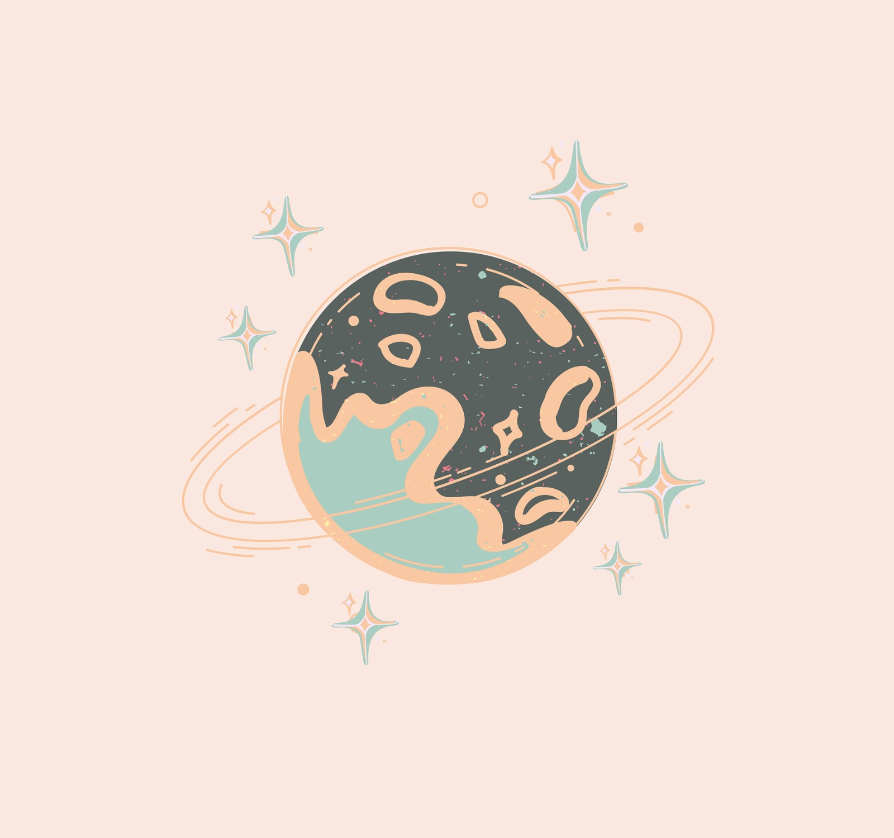

Astrology
A look into Astrology...

BENEATH MY PERFECT SURFACE
I am Saloni, a 24-year-old girl approaching her silver jubilee next year. A state-level sports player, an academic achiever with a post-graduation in physics, specializing in astrophysics, and even a gold medalist – my life seems perfect, right? A loving family, supportive friends, and crazy cousins - everything appears to be in its right place.
However, let me unveil the other half of my reality. Despite the achievements and the outward appearance of success, I wasn't truly happy. It wasn't a constant sadness (in fact, I enjoyed every achievement at its point in time) but rather a lack of contentment (As in the end, a void was always there). In the shadows, I battled extreme self-doubts, low confidence, and an overarching fear of judgment that made me exceptionally shy. I found myself unable to take pride in my accomplishments, always attributing them to external factors like luck. Fears – the fear of judgment, embarrassment, and an incessant pessimism, created an invisible barrier that hindered me from being my authentic self. This fear became so profound that I often found myself retreating away from things I truly wanted. _____________________________________
I was always fascinated and drawn towards creative fields. I feel that that’s where my passion lies and that’s what I’m made for. During my 5 years of academics (2016-2021) and 2 years of exploring various career options, my heart was always inclined toward creative fields (In 2016 I withdrew from the course of architecture after being admitted to it and went to do B.Sc., after completing it in 2019 I wanted to go for designing but again chickened out and went to do MSc.)
I became aware of this struggle and pattern in 2021, leading to a self-analysis that brought clarity to my professional aspirations. Despite this newfound clarity, it took me two years to gather the courage to step toward my interests. I realized that I had constructed a comfort zone within the world of academics and books, shielding myself from the unpredictable nature of the real world. My fear of failure kept me trapped in a loop of exploring similar career options, never truly venturing beyond the familiar. _____________________________________
After two years of jumping from one course to another, I finally understood that my academic haven was merely a safe space. It was time to face the real world, conquer my fears, and pursue my true passion. Despite knowing my weaknesses, I had avoided addressing them for far too long. Now I have finally decided to take a step towards what I truly like. It's been a journey of self-discovery, overcoming fears, and acknowledging my weaknesses. I've started working on them one by one, and though they are not entirely eradicated, I think I'm making progress every day.🙃 _____________________________________
This blog post is my commitment to not retreat into my shell. I am sharing my journey with you all, seeking courage and support. Wish me luck as I navigate this new chapter of my life. Thank you for being a part of my story! See you soon, and bye for now. P.S. I would like to mention one book that helped me decode the crux of my problem- Courage to be Disliked by Ichiro Kishimi and Fumitake Koga.
A glimpse of my experiences and my thoughts.
To photograph: it is to put on the same line of sight the head, the eye and the heart.
Goa, India
Kolad, Maharashtra
Ganga Ghat
Starbucks
A picture is a secret about a secret, the more it tells you the less you know.